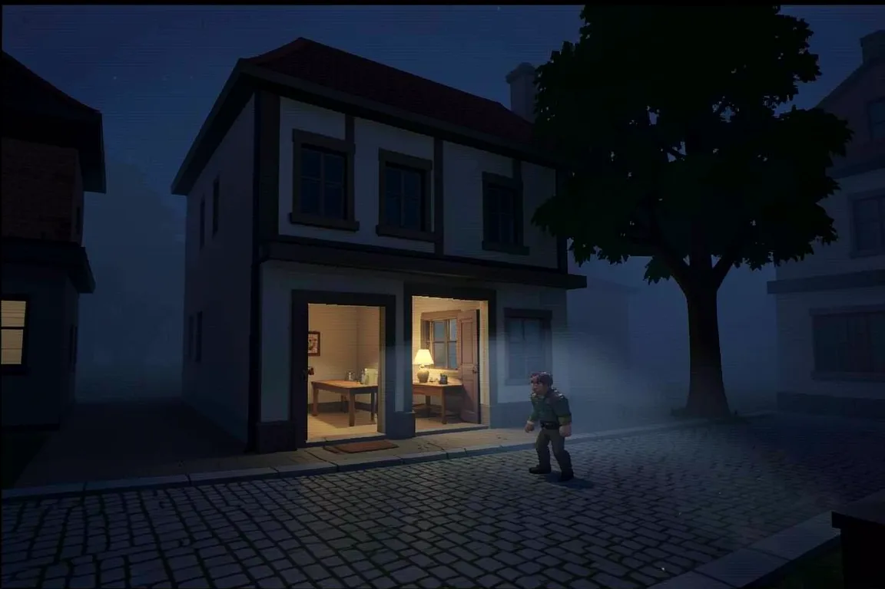

game · 2018–now · also: PSX horror, Retro 3D revival, Haunted PS1 look
Small indie teams copy the limits of the first 3D consoles on purpose: low polygons, warped low-res textures, vertex jitter, dither and dense fog. The look serves dread and nostalgia, often in empty houses and night streets.

Core thesis
An old limit, chosen on purpose, makes a modern world feel like a half-remembered dream.
Design principles
Render at 240–480 px height and scale up with no filter.
Snap vertices to a coarse grid so the geometry jitters.
Use affine texture mapping so textures warp on large faces.
Use textures of 64–128 px with colour-reduced, dithered colour.
Close the view with thick fog at 10–30 m.
Light scenes dimly, with one lamp or a flashlight.